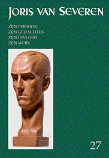
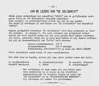

> nieuwsbrief > 2023 -3
Inhoud
Kaftillustratie: voorkaft
Jaarboek Joris van Severen 27 (2023)
Hernieuwen ledenbijdrage voor 2023
Even herinneren. Het hernieuwen van de ledenbijdragen
voor 2023 verliep naar wens. Wie dit tot nog toe naliet vindt
bij dit nummer andermaal een betaalformulier. Dankzij een zuinig
beheer blijft het ons mogelijk om, niettegenstaande alweer
gestegen druk- en portkosten, de minimumbijdrage te behouden op
29 €. In ruil daarvoor verzekeren we u de stipte toezending van
het nieuwe Jaarboek
Joris van Severen – het 27e al – dat
de meimaand verscheen en van de vier nummers van ons
kwartaalblad Nieuwsbrief
Joris van Severen. Vanaf het bedrag
van 35 € boeken we u met dank als steunend lid. Vereffening
graag via onze rekening BE29 4650 2267
2164 op naam van het Joris van Severen Instituut, Izegem.
Oude Jaarboeken
Joris van Severen
Achteraan deze Nieuwsbrief een overzicht van de nog
beschikbare vroegere Jaarboeken
Joris van Severen, met hun op heden
geldende prijs. Bestellen kan door overboeking van het
overeenkomstige bedrag op rekening BE29
4650 2267 2164 op naam van het Joris van Severen Instituut,
Izegem en opgave
van de gewenste jaargangen.
Beste
vrienden, kennissen en volgers van Maurits Cailliau
Dit
najaar
komt het Liber Amicorum voor Maurits Cailliau uit. Het
is een selectie van beschrijvingen, interviews, gedichten en
herinneringen aan Maurits Cailliau en zijn betekenis voor de
Vlaamse en Heel-Nederlandse beweging. U kunt deelgenoot worden
aan deze hulde door een voorintekening op het boek. De lijst van
voorintekenaars wordt opgenomen in het boek. U kunt
voorintekenen voor dit hardback boek door voor 30 juni 2023 het
bedrag van 28 Euro (inclusief verzendingskosten) over te maken
op bankrekening BE29 4650 2267 2164 (Joris van Severen
Instituut) onder vermelding van LA MC en uw naam. Intekenaars
worden uitgenodigd op de boekvoorstelling en viering van Maurits
Cailliau.
Met
vriendelijke
groet, Ruud Bruyns, Wido Bourel, Bert Dekeyzer
Louis Geuning -
andermaal
Geachte redactie,
Volgens de auteur beging L.G. enkele kapitale ”blunders”. Een
van die blunders was dat hij bleef zweren bij het Belgische
koningshuis. Kan de auteur mij soms vertellen wat hij anders had
moeten doen? Misschien ijveren voor een republiek? En daartoe
een partij oprichten? Wees gerust mijnheer Pauwels, L.G. besefte
wel degelijk dat koning Boudewijn geen koning Leopold lll was.
Méér, hij besefte dat sinds de z.g. “koningskwestie“ en de
troonsafstand van Leopold lll die daarvan het gevolg was, GEEN
ENKELE koning nog te vergelijken zou zijn met Leopold lll. Die
koningskwestie was niet meer of niet minder dan een brutale
staatsgreep waaraan ALLE partijen zich schuldig gemaakt hebben.
L.G. heeft meermaals gezegd: dat vanaf dat ogenblik de
democratie in ons land vernietigd was. L.G. heeft niet een
bepaalde koning verdedigd, hij heeft de MONARCHIE verdedigd, die
hij de beste staatsvorm voor België achtte. Wat ik ook doe.
L.G., mijnheer Pauwels, was een verstandig man, hij zag wel
degelijk het verschil tussen beide vorsten. Maar… welke andere
keuze had hij? Met vriendelijke groeten, Vik Eggermont
De bloemenkrans
vanwege het Joris van Severen Instituut
20 MEI 1940
21
levens koelbloedig afgemaakt. In groepjes uit een onschuldige
kelder gesleept. Met kogels en bajonetten uit de geschiedenis
geschreven. Voorgoed hun stem gesmoord in de perfide afgrond van
de wraak.
Sirenes
van een luchtaanval, de ruïnes, de bombardementen, de
onmiskenbare bewijzen van een militaire ramp. Het moet allemaal
gezorgd hebben voor een apocalyptische sfeer. Een zeker einde
van de tijden, dat alle menselijke remmen op de wreedheid wegnam
en de poorten van de hel wijd openzette. Een defaitisme dat zich
uitte in de fanatieke overtuiging dat er iets moest gebeuren,
dat de vijand het niet helemaal naar zijn zin mocht hebben, dat
het beter was iemand te laten boeten voor het dreigende échec.
En zoals altijd wordt de meest weerloze dan de zondebok. De haat
wordt niet gefocust op de feiten, maar op een beeld vertroebeld
en misvormd.
Deze
Franse militairen kweten zich als gewillige beulen van hun
gezamenlijke taak. Echte mensen werden doodgeschoten maar ook de
fantomen van hun eigen verziekte geest. Er was een bevel nodig
om die waan van voor hun eigen ogen weg te nemen. Geen besef van
wat er bezig was.
Hier
werd een grootmoeder doodgeknuppeld, een loodgieter vermoord,
een schilder in het spoor van zijn mentor geëxecuteerd. Maar ook
een Abwehr-man vond hier zijn einde. Maakt dat het bloedbad
minder contentieus?
De
deelnemers komen aan, aan het dubbelgraf
Bijzondere
aandacht voor het individu “Plus est en vous” én dit ten dienste
van het algemene belang. De staat, de overheid heeft een
opbouwende opdracht. Met de woorden van Joris van Severen zelf
uitgesproken op
08/12/1934: “De staat is slechts in dienst van de
persoonlijkheid. Alles in de wereld is daar tot dienst van den
mens.”
Vandaag
21 mei 2023 zijn deze ideeën in elk geval “waardig”. Vanuit
Christelijk perspectief en socio-politiek oogpunt kunnen we
bevestigen: Joris van Severen is niet dood. Hij leeft.
__________________
GRAFREDE vanwege
het Joris van Severen Instituut (voorzitter Luc Seynaeve) én
Stefaan Coudenys (voorzitter Abbeville Comité) 21/05/2023
Inhoud Jaarboek Joris van Severen 27 (2023)
De redactie van
het nieuwe Jaarboek Joris van Severen werd
recent afgesloten, waarbij volgende bijdragen weerhouden
werden:
Met deze aflevering zijn
we aan het 27e Jaarboek
Joris van Severen toe. We brengen andermaal een ruime
verscheidenheid aan bijdragen die op een of andere wijze
inzoomen op de ondertitel van deze reeks: Joris van Severen,
zijn persoon, zijn ideeën, zijn invloed en zijn werk. Een
overzicht:
Dank zij de recente
voortreffelijke biografie van Willem Huberts over Wouter Lutkie1
zijn we op de hoogte van diens bijwijlen intensieve contacten
met geestesgenoten in de zuidelijke Nederlanden. In zijn essay De relatie Wouter Lutkie, Joris van
Severen en het Verdinaso gaat Ruud Bruijns dieper op dit thema
in, dat ook na de oorlog een vervolg kende rond o.a. Louis
Gueuning.
Pieter
Jan Verstraete kon de hand
leggen op en collectie van het eerder zeldzaam te vinden
weekblad ‘Ik zal handhaven!’
In De korte
geschiedenis van het weekblad van het Verdinaso Nederland
gaat hij na welke speerpunten in deze door Ernst Voorhoeve
geredigeerde publicatie centraal stonden.
In Pol le Roy, dinaso en dichter
schetst Jan Creve een
biografisch portret van de vooraanstaande dinaso die met de
oorlog “aan de verkeerde kant van de geschiedenis” kwam te
staan, maar ergens toch steeds weer een dinaso-reflex behield.
De auteur besteedt ook veel aandacht aan het dichterschap van Le
Roy dat, ten gevolge van z’n oorlogsverleden slechts laattijdig
aan erkenning toekwam.
Met Aan mijn kinderen legde
de vooraanstaande Noord Nederlandse Dinaso Henri Bruning destijds ten
overstaan van zijn kinderen verantwoording af over z’n politieke
inzichten. Ook hij verzeilde tijdens de Tweede Wereldoorlog in
de collaboratie met de bezetter, evenwel met behoud van wat het
Verdinaso hem bijgebracht had omtrent mens en samenleving.
Henk Tijssen
verdiepte zich in de geschiedenis van de Friese beweging i.c. Tsjalling
Terpstra en het Frysk Nasjonael Front (FNF).
Voor de meesten van ons
betekent deze thematiek het betreden van een terrein waarover
we tot nog toe heel weinig afwisten, ook al werd daar een
ideëel terrein betreden dat in heel wat parallel liep aan wat
in het Verdinaso beleden werd.
Na de Tweede
Wereldoorlog werden meerdere pogingen ondernomen om de politieke
en maatschappelijke idealen van het vooroorlogse Verdinaso nieuw
leven in te blazen. De
Solidaristische Beweging (1974-1979) was
er daar een van. Hans Nelis volbracht het er de
geschiedenis van te boekstaven.
Roni
Ranke, een pseudoniem van
Ronald Evrard, heeft al meerdere dichtbundels op zijn actief.
Aan zijn aan Joris van Severen
gewijd gedicht om dit 27e Joris van Severen jaarboek
waardig af te sluiten.
Mocht u de
ledenbijdrage voor 2023 nog niet vereffend hebben, dan kan
bovenstaande kennisname u er allicht van overtuigen dat ook
ons 27e jaarboek beslist weer de moeite waard
wordt. Alle gegevens daaromtrent vindt u op de voorafgaande
pagina. Het jaarboek verscheen in de loop van de meimaand.
Epiloog bij Jaarboek JvS 27
(2023)

Mededeling in
‘Delta’ van november 1980
Wouter Lutkie: een priester-fascist
Als
enige Nederlander verkeerde de katholieke priester Wouter Lutkie
(1887-1968) op voet van vriendschap met de Italiaanse
fascistenleider Benito Mussolini. Zevenmaal mocht hij op
privé-audiëntie bij de Duce. Zijn eigen tijdschrift Aristo-
verscheen van juni 1930 tot april 1965. Met een
oorlogsonderbreking: in 1943 werd het door de Duitse bezetter
verboden. Luc Pauwels sprak met Willem Huberts, de
biograaf van Lutkie.
Kan je ons Wouter Lutkie voorstellen, de man
waaraan je deze excellente studie hebt gewijd?
Wouter Lutkie was een rechtlijnige, recalcitrante en
revolutionaire priester, opponent van de Rooms-Katholieke
Staatspartij, Mussolini-adept en fascistisch activist achter de
schermen. Ondanks alle controversen rondom zijn persoon was hij
iemand die grote indruk op zijn omgeving maakte. Zijn manier van
optreden, zijn voorkomen, zijn plechtige wijze van spreken en
zijn hulpvaardigheid boezemden ontzag in. Dat hij ‘de tovenaar
van Nuland’ werd genoemd, is niet zonder reden: de in hoofdzaak
ongeletterde boerenbevolking in het dorpje Nuland (woonplaats
van Lutkie) en verre omgeving keek huizenhoog naar hem op, want
hij loste problemen voor hen op die zij zelf niet konden
ontwarren. Als priester, maar ook als mens was hij onbaatzuchtig
en oprecht tot in zijn haarvaten. Hij was een eigenzinnig
fascist, een toegankelijke steunpilaar, een geharnaste idealist
en een wereldvreemde wereldverbeteraar.
Hoe kreeg Wouter Lutkie het gedaan katholiek
priester te blijven, vrijgesteld te worden van zielzorg en
zich voor de rest van zijn leven te wijden aan een heel
andere leer dan die van het Evangelie?
Dankzij een schenking van zijn vader, die een
vermogende lederhandelaar was, kon Lutkie een financieel
onafhankelijk leven leiden. Na zijn priesterwijding werd hij
najaar 1919 benoemd tot kapelaan in het dorpje Gemonde. Dat
hield hij een kleine drie jaar vol, tot het voorjaar van 1922.
Toen werd hij ziek. De samenwerking met zijn pastoor en het
contact met zijn bisschop, monseigneur Diepen, verliepen
moeizaam. Hoewel zijn werk als zielzorger hem enige bevrediging
schonk, werd het hem gaandeweg duidelijk dat de kerkelijke
kaders begonnen te knellen. Na een periode van ziekte verleende
monseigneur Diepen hem ontslag uit kerkelijke dienst.
Wouter Lutkie, geportreteerd door Jan Toorop
De
rest van zijn leven deed Lutkie waar zijn hart lag: lezen,
schrijven, mensen helpen en proberen de wereld verbeteren –
alles met Gods hulp, want Lutkie bleef zijn leven lang een
diepgelovige katholieke priester. Bij al zijn politieke
activiteiten moest hij goed rekening houden met de opvattingen
van het episcopaat en in het bijzonder met die van bisschop
Diepen.
Deze
heeft Lutkie enkele keren een publicatieverbod opgelegd omdat
Lutkie in zijn ogen de belangen van de katholieke kerk bedreigde
door met zijn artikelen in Aristo- de eenheid van de
kerk aan te vallen. Ook heeft Diepen Lutkie meermalen verboden
lezingen te geven voor fascistische vergaderingen. Lutkie
gehoorzaamde trouw, want hij wilde niet worden geëxcommuniceerd.
Toch legde hij soms ook de oekazes van Diepen naast zich neer en
dat zag Diepen dan door de vingers.
Heeft Wouter Lutkie zich ooit zelf expliciet
‘fascist’ genoemd, zoals bv. Jan Baars en Arnold Meijer
deden?
Ja, hij heeft zichzelf regelmatig ‘fascist’ genoemd.
In 1932, in enkele brieven aan Benito Mussolini, ondertekent hij
met sacerdote cattolico e fascista, katholiek en
fascistisch priester. In een brief uit augustus 1933:
‘Voorloopig wete u, dat ik als priester en ook als fascist Baars
steun met mijn vertrouwen.’ In oktober 1939 schreef Lutkie in Aristo-:
‘Op de vraag: “Zijt gij fascist?” heb ik menigmaal zoo niet met
een simpel ja toch in bevestigende zin geantwoord.’ Hij
beschouwde zichzelf als een Italiaans fascist maar hij wilde
niet geassocieerd worden met Nederlandse politieke partijen en
bewegingen die zich fascistisch noemen. Hij had een sterke
afkeer van het nationaalsocialisme van Adolf Hitler en diens
Nederlandse leerling Anton Mussert.
Hoort Wouter Lutkie niet eerder thuis bij
hetgeen Armin Mohler de Conservatieve Revolutie heeft
genoemd, en meer bepaald bij de ‘jong-conservatieven’. Hij
zou daar in het gezelschap komen van o.m. zijn
leeftijdsgenoten Emiel Verviers en Carel Gerretson.
Lutkie
kan worden beschouwd als behorend bij de aanhangers van de
Conservatieve Revolutie, met dien verstande, dat Lutkie een heel
specifiek en nauw-omschreven deel van het verleden wenste te
zien terugkeren: de wereld van vóór de Franse Revolutie, waarin
het katholicisme de facto functioneerde als
staatsgodsdienst. Lutkie was een aanhanger van de ideologie van
de Renouveau catholique, een herstelbeweging die de
filosofie van Thomas van Aquino een grote rol toekende en die de
gevolgen van de Verlichting en de Franse Revolutie ongedaan
wilde maken, evenals haar de als negatief ervaren invloeden van
liberalisme, positivisme en naturalisme.
Lutkie
werkte langdurig en nauw samen met Verviers en Gerretson, maar
er waren kenmerkende verschillen in opvattingen. Verviers
streefde naar een fascistische en corporatieve staatsinrichting,
waarbij de economische aspecten voor hem het zwaarst telden.
Voor Lutkie hadden geestelijke en religieuze aspecten de
boventoon; de economische aspecten waren slechts in zoverre voor
Lutkie van belang als zij de ondergeschikt waren aan het geloof.
De Groot-Nederlandse gedachte waarin Gerretson geloofde kon
slechts op minimale belangstelling van Lutkie rekenen.
Wat zijn de overeenkomsten en verschillen
tussen Wouter Lutkie en Joris van Severen? Hebben ze elkaar
ooit ontmoet?
De fascist Lutkie en de nationaalsolidarist Joris van
Severen, leider van het Verdinaso, vonden elkaar in hun wens om
een staatsinrichting, gebaseerd op fascistische grondslag, te
realiseren. Het grootste verschil tussen beiden is dat Van
Severen zich als actief politicus opstelde. Lutkie bleef een
theoreticus die achter de schermen probeerde invloed uit te
oefenen.
Gedurende de tweede helft van 1935 had Lutkie frequent
contact met Van Severen. Op 4 augustus was Lutkie op de vierde
landdag van het Verdinaso te Brugge. ’s Avonds werd hij uitgenodigd
om met Van Severen te dineren in het Brugse hotel De Dijver en
de volgende dag werd Lutkie door Van Severen thuis ontvangen.
Zij besloten daar dat Lutkies tijdschrift Aristo- en het
Verdinaso zouden gaan samenwerken. Alvorens het echter zover
was, won Lutkie nadere informatie over het Verdinaso en zijn
leider in. Daartoe had hij in augustus 1935 een onderhoud met
Willem Melis, een van de belangrijkste medewerkers van Van
Severen. Op 14 september bezocht hij Van Severen opnieuw.
Vervolgens vroeg Lutkie aan Henri Bruning, lid van de
Nederlandse tak van het Verdinaso, om een artikel voor Aristo-
te schrijven waarin het ideeëngoed van het Verdinaso werd
besproken.
Op 2 december 1935 spraken Lutkie en Van Severen
elkaar opnieuw. Lutkie poogde Van Severen te betrekken bij zijn
fascistische onderzoeksinstituut Instituto Universale di
Studi Corporativi. Blijkbaar was Van Severen tevreden over
het artikel van Henri Bruning en de toekomstige samenwerking,
want bij een bezoek van Lutkie op 10 januari 1936 noteerde hij
in zijn dagboek dat eensgezindheid over de Aristo‑regeling
was bereikt. Als tegenprestatie voor het artikel van Bruning
besloot Ernst Voorhoeve, leider van Dinaso Nederland, exemplaren
van Aristo- ter beschikking te leggen in de – twee of
drie – Nederlandse Dinaso‑huizen en overdrukken van het artikel
te verspreiden om abonnementen te werven. De overeenkomst tussen
Lutkie en Van Severen hield in dat er maandelijks ruimte in Aristo‑
zou worden gereserveerd voor het beleid en de daden van het
Verdinaso.
Hoewel de samenwerking niet lang duurde, bleef Lutkie
geïnteresseerd in Joris van Severen en zijn Verdinaso. Zo
bezocht hij de Dinaso-landdagen, tot hem dat onmogelijk werd
gemaakt, omdat iemand aan monseigneur Diepen had doorgebriefd
dat hij op zo’n landdag was gesignaleerd. Aan de jonge auteur
Pierre H. Dubois schreef hij: ‘Den Dinaso-landdag zal ik niet
bezoeken, omdat mijn bezoek van vorig jaar voor een der
persoonlijkheden onzer clergé aanleiding is geweest Mgr. Diepen
voor te stellen mij deswege – maar tevens onder beschuldiging
dat ik op dien landdag “gesproken” zou hebben, voor welke
beschuldiging ook geen schijn van grond aanwezig was – met
suspensie te straffen. Ik ben er niet voor ter verantwoording
geroepen, doch Mgr. Diepen heeft geweigerd op dat voorstel in te
gaan.’
In mei 1953 vond in Gent een herdenking plaats van
Joris van Severen waarvoor Lutkie als spreker werd gevraagd. Hij
meldde de bij de organisatie betrokken Albert Brienen: ‘Gij
begrijpt wel dat ik in genendele over “politiek” wens te spreken, ik wil Van Severen, de
nagedachtenis van Van Severen, huldigen als een symbool en ook
als mens. Maar ik spreek niet over kwesties van organisatie, van
politiek doel en middelen. Daar blijf ik heel en gans buiten.’
De tekst van zijn lezing publiceerde hij onder de titel
‘Herdenking Joris van Severen (Gent 16 mei 1953)’ in Aristo-
van mei 1953.
Opvallend is de Heel-Nederlandse overtuiging
van Wouter Lutkie. Fascisten in België, die zichzelf zo
noemden zoals bv. Paul Hoornaert van het Nationaal Legioen,
waren strikte staatsnationalisten en moesten niets hebben
van Nederland, laat staan van een staatkundig samengaan. Hoe
verklaar je dat?
Ik
betwijfel of men Lutkie kan beschouwen als een
‘Heel-Nederlander’ of als een ‘Groot-Nederlander’. Hij was
francofiel tot in zijn botten, voelde steevast enige geestelijke
afstand tot het protestantisme van de noordelijke Nederlanden en
hij heeft zich zelden tot nooit duidelijk uitgesproken voor de
staatkundige eenheid van Nederland, België en Luxemburg. Ook de
staatkundige vereniging van de Nederlandssprekende gebieden in
Nederland en België had niet zijn diepe interesse. Lutkie was
fascist, maar hij hield zich altijd verre van de alledaagse
praktische politiek.
Lutkie had toch een uitgesproken
belangstelling en sympathie voor Vlaanderen? Vanwaar anders
die bezoeken aan de IJzerbedevaart en Dinaso-landdagen?
Aristo- had toch ook Vlaamse bedewerkers en de uitvaart van
Lutkie sprak een Vlaming
Jazeker
had Lutkie belangstelling voor wat er in Vlaanderen op politiek
en sociaal gebied allemaal voorviel. De IJzerbedevaart woonde
hij slechts éénmaal bij, in 1928 en dat deed hij omdat hij nu
toch eenmaal in België op reis was op dat moment, niet omdat hij
zich innerlijk of ideologisch gedreven voelde. De
Verdinaso-landdagen woonde hij 2 of 3 maal bij en hij had
natuurlijk regelmatig contact met de Vlaamse medewerkers van Aristo-.
Maar al deze contacten kwamen voort uit zijn belangstelling voor
wat er op politiek en geestelijk terrein aan de hand was
in Vlaanderen, niet omdat hij zich schaarde achter de
Groot- of Heel-Nederlandse idealen van Joris van Severen.
Mussolini zelf was een rigide
staatsnationalist. Voor de (Duitse) eigenheid van Zuid-Tirol
had hij niet het minste begrip… Vanwaar dan de ‘afwijkende’
gezindheid van Wouter Lutkie?
Het is zeker niet zo, dat Lutkie een slaafs volger was
van alles wat Mussolini deed en schreef. Mussolini’s
binnenlandse politiek kon steevast op Lutkies steun rekenen,
maar zijn buitenlandse politiek slechts ten dele. Lutkie
bekritiseerde openlijk in geschrifte de samenwerking die
Mussolini zocht met nazi-Duitsland. Uitsluitend op dát onderdeel
van Mussolini’s politiek had Lutkie kritiek.
Staatkundig gezien stond Lutkie op het standpunt dat
de Nederlandse staat waard was om in leven te blijven in de vorm
die Lutkie kende. Hij bond zelfs de strijd aan met insluipende
germanismen in het Nederlands. Ook hier zag hij de komende
strijd tegen nazi-Duitsland. In januari 1939 schreef hij het
tijdschrift Onze Taal: ‘Goed succes in het nieuwe jaar
met uw strijd tegen alle barbarismen, maar speciaal tegen de
germanismen die meer dan andere te duchten zijn, namelijk om hun
staatkundige consequenties.’ Voor Lutkie waren
Mussolini’s staatsnationalistische opvattingen minder
zwaarwegend dan diens corporatistische visie.
Bevat uw Lutkie-biografie ontdekkingen over
hem die tot nu toe onbekend waren?
Door mijn onderzoek naar
Lutkie zijn vier belangrijke nieuwe vondsten aan het licht gekomen.
Deze zaken zijn:
1923 – Lutkie is onrechtvaardig behandeld door zijn
bisschop, monseigneur Diepen en door de leiding van de
Katholieke Universiteit Nijmegen (rector-magnificus monseigneur
prof. dr. J.C.F.H. Schrijnen en de hoogleraar filosofie prof.
dr. G.J. de Langen Wendels OP). Met name De Langen Wendels was
een klassieke Roomse draaikont. Eerst liet hij Lutkie mondeling
en schriftelijk weten dat deze welkom was om bij hem in Nijmegen
filosofie te komen studeren, maar toen rector-magnificus
Schrijnen en bisschop Diepen hem lieten weten dat ze Lutkie niet
naar Nijmegen wilden laten gaan, ontkende De Langen Wendels dit
ooit gezegd en geschreven te hebben en beschuldigde hij Lutkie
van leugens.
Dit kon bekend worden omdat
De Langen Wendels’ brief waarin hij Lutkie beloofde dat deze bij
hem mocht komen studeren, bewaard is gebleven in het
Bisschoppelijk Archief van Den Bosch. Diepen had overigens
Lutkie in 1919 al verboden te gaan studeren in Parijs en in
Rome. Na deze derde weigering zou het tussen Diepen en Lutkie
nooit meer goed komen.
1923-1963 – Lutkie had met zijn Stichting Soli
Deo grote ambities: bibliotheek, voedsel (groenten en
vlees), immateriële ondersteuning, buitenkerkelijke zielzorg.
Het doel van de stichting was ‘de bevordering van het sociale, economische en
geestelijke leven in Noord-Brabant, bizonderlijk ten behoeve der
bevolking der gemeente Nuland: alles bedoeld in katholieken
zin.’ Lutkie stelde zijn eigen bibliotheek ter beschikking aan
iedereen die haar wilde raadplegen, en ook leende hij boeken uit
ter verheffing van het volk. Daarnaast werden in de loop der
jaren vele tientallen mensen ondersteund bij het oplossen van
juridische problemen en werden weinig geletterde Nulandse boeren
geholpen bij contacten met de overheid. Ook werden de producten
van het in de loop der jaren opgebouwde land- en tuinbouwbedrijf
afgezet onder de eigen bevolking. Een potentieel belangwekkender
doelstelling was de vergroting van het eigen grondbezit van de
kleine pachters in Nuland en omgeving. Lutkie wilde de
afhankelijkheid van de boerenbevolking aan de grootgrondbezitter
te verminderen.
1923-1963 – Lutkie heeft als ombudsman avant la lettre ca. 6000 personen (veelal uit Nuland en omgeving,
maar ook uit Noord-Brabant en zelfs elders uit Nederland) in
nood geholpen, dat is gemiddeld twee per week gedurende die
gehele periode. Nooit wilde hij betaald of anderszins beloond worden
voor zijn werk. Al zijn activiteiten als ‘ombudsman’ wenste hij
verborgen te houden voor de buitenwereld. Voor hem was dat werk
verbonden aan zijn functie van priester en moest het daarom als
vertrouwelijk worden beschouwd. In zijn optiek zou te zijner
tijd de Opperste Rechter over zijn handelen oordelen en in diens
oordeel had hij oneindig meer vertrouwen dan in dat van de
medemens.
Onder de zaken die Lutkie
‘behandelde’, waren: belastingproblemen,
burenruzies, de ondersteuning van ongehuwde moeders bij
abortuskwesties en ongewenste zwangerschappen,
echtscheidingsproblemen, erfeniskwesties, het schrijven van
brieven aan de minister, aan de burgemeester, aan de rechtbank
en aan andere (overheids)instanties die laag-geletterden zelf
niet konden schrijven, het vervoer van illegaal geslacht en
ongekeurd vlees, het verkrijgen van vrijstelling van de heffing
van waterschapslasten, het oplossen van conflicten over de
verkoop van onroerend goed, het verkrijgen van uitstel van
pachtbetalingen, huisuitzettingen wegens huurachterstand,
juridische problemen als gevolg van illegale drankverkoop,
boter- en sigarettensmokkel en het onjuist oormerken van
varkens, pensioenproblemen, sollicitaties (waarvoor hij ook zijn
netwerk inschakelde), verkrijgen van vrijstelling voor
herhalingsoefeningen in militaire dienst en zwangerschap na
omgang met geallieerde soldaten.
1940-1944 – Lutkie heeft ca. 200 personen uit Duitse
gevangenschap weten te krijgen, dat is in die periode gemiddeld
iedere week eentje. Er is mij niemand anders bekend die helemaal
in zijn eentje hetzelfde heeft gepresteerd. Iedere keer als
Lutkie poogde ten gunste van een door de Duitsers
gevangengenomen persoon op te treden, wendde hij zich tot Hauptsturmführer
Samel bij de Sicherheitsdienst in ‘s-Hertogenbosch. Op
basis van het overgeleverde archiefmateriaal is niet exact na te
gaan hoeveel personen hun vrijheid aan Lutkies interventie te
danken hebben, maar het moeten er meer dan tweehonderd zijn
geweest. Zelf becijferde hij het aantal in een brief aan goede
vrienden op 212.
Bron: Wouter
Lutkie:
een priester-fascist, neen toch… - Doorbraak.be & Wouter
Lutkie:
een priester-fascist, neen toch… (2) - Doorbraak.be
Scriptieprijs Joris van Severen Instituut
Het Joris van
Severen Instituut is een vereniging die de studie naar de
persoon en de ideeën van Joris van Severen (1894-1940) wenst te
bevorderen. In de loop van de afgelopen decennia is daartoe een
archief aangelegd rond Joris van Severen en zijn bewogen
politieke loopbaan, in het bijzonder het Verbond van Dietse
Nationaal-Solidaristen (Verdinaso). Dit archief is in 2000
overgedragen aan de universiteitsbibliotheek van de Katholieke
Universiteit Leuven en werd aldaar ondertussen grotendeels
geïnventariseerd door dr. Bart Coppein.
Het doel van de archiefoverdracht was om de
wetenschappelijke studie over Joris van Severen en het Verdinaso
te stimuleren. Het Instituut wil deze studie actief gaan
bevorderen door het instellen van een scriptieprijs voor
studenten, waaraan een geldbedrag van 500 € is verbonden.
Graag zouden we iedereen willen vragen om deze
scriptieprijs onder de aandacht te brengen van studenten
en van de bij u bekende professoren. Het Joris van
Severen-archief aan de KU Leuven is nog grotendeels onontgonnen
en een wetenschappelijke biografie ontbreekt vooralsnog. Er is
met andere woorden sprake van historisch onontgonnen terrein en
ook ideologisch roept de persoonlijkheid van Joris van Severen
nog steeds veel vragen op rond zijn politieke ontwikkeling. Ook
is er nog nauwelijks iets bekend over de samenstelling van zijn
aanhang.
Op basis van minimaal twee inzendingen zal een
commissie binnen het Joris van Severen Instituut de prijs al dan
niet toekennen aan een scriptie die handelt over de persoon
Joris van Severen, het Verdinaso of één van de naoorlogse
Nachfolge-bewegingen. De scriptie hoeft niet noodzakelijk een
eindscriptie te zijn, maar dient minstens vijftien A4-pagina’s
te omvatten. Het Joris van Severen Instituut zal de uitreiking
van deze scriptieprijs gepast omkaderen en de auteur de
gelegenheid bieden om de scriptie te publiceren in het Jaarboek
van het Studiecentrum. De auteur zal een exemplaar van het
jaarboek en tien nadrukken ontvangen. Mocht u nog vragen of
opmerkingen hebben, aarzel dan niet om contact met ons op te
nemen.
Voor de beoordelingscommissie, Drs. R.A.B. Bruijns,
p/a Secretariaat Joris van Severen Instituut, Nieuwpoortsesteenweg
395, 0202, 8400 Oostende.
Nog voorradige Jaarboeken Joris van Severen
|
Jaargang |
Auteur |
Leden- prijs |
Niet-leden |
|
Jaarboek 3 - 1999 272 pagina’s |
Luc Pauwels, De ideologische evolutie van Joris van
Severen |
20 € |
25 € |
|
Jaarboek 6 - 2002 |
208 p |
10 € |
15 € |
|
Jaarboek 7 - 2003 |
208 p |
10 € |
15€ |
|
Jaarboek 8 - 2004 |
208 p |
10 € |
15 € |
|
Jaarboek 13 – 2009 |
208 p |
10 € |
15 € |
|
Jaarboek 14 - 2010 |
208 p |
10 € |
15 € |
|
Jaarboek 15 - 2011 |
208 p |
10 € |
15 € |
|
Jaarboek 16 - 2012 |
208 p |
15 € |
20 € |
|
Jaarboek
17 - 2013 |
208 p |
15
€ |
20 € |
|
Jaarboek
18 – 2014 Album Grote Foto-biografie + DVD |
M. Cailliau
& P.J.
Verstraete, 248 p. 30 x 24 |
55
€ |
65 € |
|
Jaarboek
19 - 2015 |
208 p |
15
€ |
20 € |
|
Jaarboek
20 – 2016 |
208 p |
15
€ |
20 € |
|
Jaarboek
21 – 2017 |
208 p |
20
€ |
25 € |
|
Jaarboek
22 – 2018 |
208 p |
20
€ |
25 € |
|
Jaarboek
23 – 2019 |
208 p. |
20
€ |
25 € |
|
Jaarboek
24 - 2020 |
208 p. |
29
€ |
35 € |
|
Jaarboek
25 - 2021 |
208 p. |
29
€ |
35 € |
|
Jaarboek
26 - 2022 |
208 p. |
29
€ |
35 € |
|
Jaarboek
27 - 2023 |
208 p. |
29
€ |
35 € |
In deze rubriek verwijzen we zonder veel commentaar
naar recente publicaties waarin Joris van Severen en/of het
Verdinaso vermeld worden. We citeren de meest treffende
passussen woordelijk zonder daarin volledigheid na te streven.
We verzoeken onze lezers, met ons, uit te zien naar
publicaties die voor deze rubriek 'stof' kunnen leveren en ons
kopie van de betreffende passages toe te sturen.
Charles Ferdinand Nothomb (1936-2023)
”(...)
Zijn vader Pierre was actief als politicus en schrijver. Tijdens
de jaren 30 flirtte de katholiek met het fascisme, uiteindelijk
liet hij zich vangendoor het populisme van Rex-leider Léon
Degrelle. Zijn belgicisme en zijn rechtse ideeën brachten hem in
contact met Joris van Severen, de leider van het Verdinaso. Toen
Van Severen bij het begin van de Tweede Wereldoorlog als
staatsgevaarlijk opgepakt en naar Franrijk werd gevoerd,
probeerde Nothomb tevergeefs om de Verdinaso-leider vrij te
krijgen.(…)”
___________________
Bart
Brinckman in De Standaard, 21 april 2023, die daarmee
bewijst wel te weten waar de klepel hangt, maar meteen ook
bevestigt geen lezer te zijn van de Jaarboeken Joris van
Severen.
Gustaaf Baeten
Gustaaf
Baeten (1898-1974) behoorde tot de groep katholieke
nationalisten die aan de basis lag van het Heel-Nederlandse
weekblad Jong
Dietsland, waarvan de stichtingsvergadering bij
hem thuis plaatshad. Hij was aanvankelijk ook betrokken bij de
besprekingen die uiteindelijk tot de stichting van het Vlaams
Nationaal Verbond (VNV) leidden. Toch koos hij voor het Verbond
van Dietse Nationaal Solidaristen (Verdinaso) van Joris van
Severen. Hij was een gezaghebbende figuur, maar ver van het
podium. Dr. Baeten ging helemaal op in zijn medisch werk. Hij
overlijdt in 1974 op de leeftijd van 78.
Auteur:
Luc Pauwels
________________
Bron: https://doorbraak.be/ Net
binnen -
Tijdschrift Branding
1947 Eerste nummer van Branding,
Vlaams solidaristisch weekblad, een initiatief van studenten aan
de KULeuven, met name Frans van Mechelen, Karel van der Mueren
en Manu Ruys. Deze laatste beschreef het opzet als volgt: ‘De
redactie riep de intellectuele jeugd op tot een maatschappelijke
ordening met als fundamenten de waarden van solidariteit en
verzoening. Vrij van kerkelijke bindingen sprak het blad zich
uit voor de christelijke ethiek. Op politiek vlak kwam het op
voor diegenen die onterecht veroordeeld of vervolgd werden voor
collaboratie met de Duitse bezetter. Het plaatste zijn
solidarisme tegen de klassenstrijd-theorie van het marxisme,
waarin het een groot gevaar zag voor het naoorlogse Europa. De
uitgave werd gestaakt toen bleek dat de respons gering was en
het maandblad Golfslag
beter aansloeg bij de studenten. Van Mechelen en
Ruys zouden later enkele gedachten van Branding ontwikkelen
in
hun respectievelijke politieke en journalistieke loopbaan’.
____________
Auteur: Luc Pauwels, Bron: https://doorbraak.be/29-maart-net-binnen